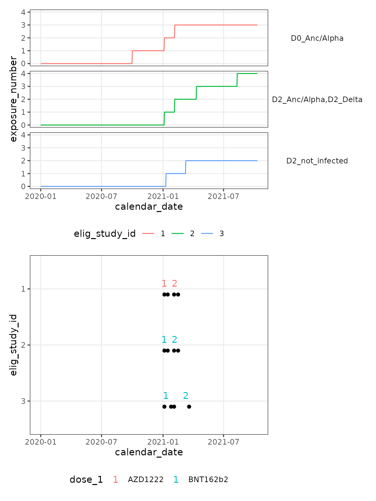

Annotate exposures
annotate_exposures.RmdIntroduction
The chronogram package provides a family of functions to annotate a
chronogram. These all start cg_annotate_. This vignette
explains how to use these annotation functions. Before using this
vignette, consult the vignette("assembly").
This vignette demonstrates annotation of exposures. Exposures can be
either from vaccines, or infection episodes - these require annotation
first. See: vignette("annotate vaccines") &
vignette("annotate episodes").
Setup
library(chronogram)
library(dplyr)
#>
#> Attaching package: 'dplyr'
#> The following objects are masked from 'package:stats':
#>
#> filter, lag
#> The following objects are masked from 'package:base':
#>
#> intersect, setdiff, setequal, union
library(ggplot2)
library(patchwork)We will use the example pre-built chronogram, introduced in the
vignette("assembly"), with vaccines and episodes annotated:
vignette("annotate vaccines") &
vignette("annotate episodes"). The code chunk below is
discussed in those vignettes.
data(built_smallstudy)
cg <- built_smallstudy$chronogram
infections_to_add <- built_smallstudy$infections_to_add
## add to chronogram
cg <- cg_add_experiment(
cg,
infections_to_add
)
## annotate vaccines
cg <- cg_annotate_vaccines_count(
cg,
## the prefix to the dose columns: ##
dose = dose,
## the output column name: ##
dose_counter = dose_number,
## the prefix to the date columns: ##
vaccine_date_stem = date_dose,
## use 14d to 'star' after a dose ##
intermediate_days = 14
)
#> Using stem: date_dose
#> Found vaccine dates
#> date_dose_1
#>
#> date_dose_2
## annotate episodes
cg <- cg %>%
cg_annotate_episodes_find(
infection_cols = c("LFT", "PCR", "symptoms"),
infection_present = c("pos", "Post", "^severe")
) %>%
mutate(
episode_variant =
case_when(
# "is an episode" & "PCR positive" -> Delta #
(!is.na(episode_number)) & PCR == "Pos" ~ "Delta",
# "is an episode" & "PCR unavailable" -> Anc/Delta #
(!is.na(episode_number)) & PCR == "not tested" ~ "Anc/Alpha"
)
) %>%
cg_annotate_episodes_fill(
col_to_fill = episode_variant,
col_to_return = episode_variant_filled,
.direction = "updown"
)
#> Parsed: infection_cols and infection_present
#>
#> Searching in the [[column]], for the "text":
#> stringr::str_detect(.data[["LFT"]], "pos") ~ "yes"
#>
#> stringr::str_detect(.data[["PCR"]], "Post") ~ "yes"
#>
#> stringr::str_detect(.data[["symptoms"]], "^severe") ~ "yes"
#>
#>
#> ...detecting will be exact.
#> Capitals, spelling etc must be precise
#> Joining with `by = join_by(calendar_date, elig_study_id)`
#> Joining with `by = join_by(elig_study_id, episode_number)`Outline
Annotation is required to allow the selection sub-cohorts of individuals (and corresponding dates) that are relevant to test your biological hypothesis.
Exposures can be either from vaccine doses or from infection
episodes. cg_annotate_exposure_count() provides a
cumulative counter for each individual’s personal history.
cg_annotate_antigenic_history() returns a text string
summarising the sequence of encounters.
Worked example
cg_annotate_exposure_count() takes the column names for
episode number, dose number and seroconversion episode numbers, to
calculate a per day, per individual running count of exposures.
cg_annotate_antigenic_history() provides a character
vector of length 1 to summarise each person’s course over the study.
These are both best explored with an example, and a plot.
cg_exposures <- cg %>% cg_annotate_exposures_count(
episode_number = episode_number,
dose_number = dose_number,
## we have not considered episodes of seroconversion
N_seroconversion_episode_number = NULL
)
cg_exposures <- cg_exposures %>%
mutate(
episode_variant_summarised =
episode_variant_filled
) %>%
cg_annotate_antigenic_history(
episode_number = episode_number,
dose_number = dose_number,
episode_variant_summarised = episode_variant_summarised,
ag_col = antigenic_history
)
## Plot ##
top_panel <- cg_exposures %>%
select(calendar_date,
exposure_number,
elig_study_id,
antigenic_history) %>%
ggplot(aes(
x = calendar_date, y = exposure_number,
col = elig_study_id
)) +
geom_line() +
facet_grid(antigenic_history ~ .)
swimmers_panel <- cg_plot_meta(cg_exposures,
visit = serum_Ab_S
) +
## set the axes to match top_panel ##
xlim(
min(cg_exposures$calendar_date),
max(cg_exposures$calendar_date)
) +
scale_y_discrete(limits = factor(c(3, 2, 1)))
#> Function provided to illustrate chronogram ->
#> ggplot2 interface.
#> Function assumes the
#> presence of {dose_1, date_dose_1, dose_2, date_dose_2}
#> columns.
#> Users are likely to want to write their own,
#> study-specific applications
top_panel / swimmers_panel & theme_bw() &
theme(
legend.position = "bottom",
strip.text.y = element_text(angle = 0),
strip.background = element_blank(),
panel.grid.minor = element_blank()
)
The plot above shows how each infection, or vaccination impacts the exposure number. For participant 3, their only exposures are vaccination, whereas both participants 1 and 2 have additional exposures from infection. By the end of this example, participant 2 has experienced 4 encounters with Spike, participant 1 has had 3 encounters and participant 3 just two from vaccination alone.
Summary
This vignette has provided examples of the cg_annotate family in
action. If you are conducting a multi-pathogen study (RSV, flu, covid),
then run a set of cg_annotate family functions for each pathogen - and
you may wish to prefix the output columns eg RSV_,
flu_ & covid_. As these have differing
considerations for eg variants, chronogram leaves the cg_annotate family
without an overall wrapper to let users easily omit unneeded
annotations.
SessionInfo
sessionInfo()
#> R version 4.4.1 (2024-06-14)
#> Platform: x86_64-pc-linux-gnu
#> Running under: Ubuntu 22.04.4 LTS
#>
#> Matrix products: default
#> BLAS: /usr/lib/x86_64-linux-gnu/openblas-pthread/libblas.so.3
#> LAPACK: /usr/lib/x86_64-linux-gnu/openblas-pthread/libopenblasp-r0.3.20.so; LAPACK version 3.10.0
#>
#> locale:
#> [1] LC_CTYPE=C.UTF-8 LC_NUMERIC=C LC_TIME=C.UTF-8
#> [4] LC_COLLATE=C.UTF-8 LC_MONETARY=C.UTF-8 LC_MESSAGES=C.UTF-8
#> [7] LC_PAPER=C.UTF-8 LC_NAME=C LC_ADDRESS=C
#> [10] LC_TELEPHONE=C LC_MEASUREMENT=C.UTF-8 LC_IDENTIFICATION=C
#>
#> time zone: UTC
#> tzcode source: system (glibc)
#>
#> attached base packages:
#> [1] stats graphics grDevices utils datasets methods base
#>
#> other attached packages:
#> [1] patchwork_1.2.0 ggplot2_3.5.1 dplyr_1.1.4 chronogram_1.0.0
#>
#> loaded via a namespace (and not attached):
#> [1] gtable_0.3.5 jsonlite_1.8.8 highr_0.11 compiler_4.4.1
#> [5] tidyselect_1.2.1 stringr_1.5.1 tidyr_1.3.1 jquerylib_0.1.4
#> [9] systemfonts_1.1.0 scales_1.3.0 textshaping_0.4.0 yaml_2.3.10
#> [13] fastmap_1.2.0 R6_2.5.1 labeling_0.4.3 generics_0.1.3
#> [17] knitr_1.48 tibble_3.2.1 desc_1.4.3 munsell_0.5.1
#> [21] lubridate_1.9.3 bslib_0.8.0 pillar_1.9.0 rlang_1.1.4
#> [25] utf8_1.2.4 stringi_1.8.4 cachem_1.1.0 xfun_0.46
#> [29] fs_1.6.4 sass_0.4.9 timechange_0.3.0 cli_3.6.3
#> [33] pkgdown_2.1.0 withr_3.0.1 magrittr_2.0.3 digest_0.6.36
#> [37] grid_4.4.1 lifecycle_1.0.4 vctrs_0.6.5 evaluate_0.24.0
#> [41] glue_1.7.0 farver_2.1.2 ragg_1.3.2 fansi_1.0.6
#> [45] colorspace_2.1-1 purrr_1.0.2 rmarkdown_2.27 tools_4.4.1
#> [49] pkgconfig_2.0.3 htmltools_0.5.8.1